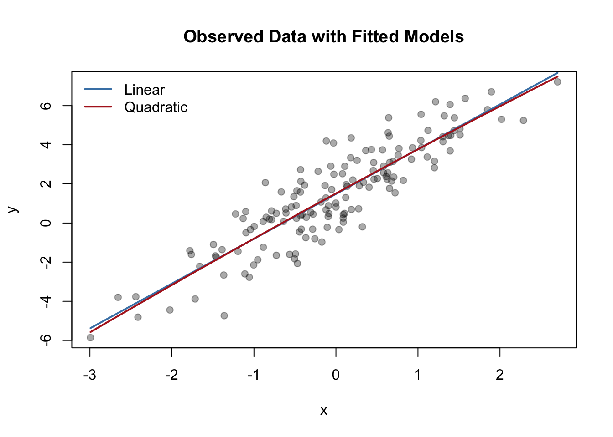

set.seed(5)
M <- 5000
y_obs <- 7; n <- 10
theta <- rbeta(M, 2 + y_obs, 2 + n - y_obs) # posterior draws
y_rep <- rbinom(M, n, theta)
ppc_p <- mean(y_rep >= y_obs)
ppc_p[1] 0.509This week introduces methods for evaluating Bayesian model adequacy and comparing models.
We focus on Posterior Predictive Checking (PPC) and Bayesian Model Comparison via Bayes factors, WAIC, and LOO.
Students will diagnose model fit using replicated data and compare predictive accuracy among competing models.
By the end of this week, you should be able to:
For data \(y\) and parameters \(\theta\), \[ p(\tilde{y}\mid y) = \int p(\tilde{y}\mid\theta)\,p(\theta\mid y)\,d\theta. \] If a model is adequate, the observed data \(y\) should look typical among replicated datasets \(\tilde{y}\) simulated from this distribution.
Values near 0 or 1 suggest lack of fit.
[1] 0.509[1] 0.145Competing Bayesian models are compared by their fit and complexity.
Common approaches include Bayes factors, WAIC, and LOO.
Given two models \(M_1\) and \(M_2\), \[
\text{BF}_{12} = \frac{p(y\mid M_1)}{p(y\mid M_2)} ,\qquad
p(y\mid M)=\int p(y\mid\theta_M,M)\,p(\theta_M\mid M)\,d\theta_M.
\] - \(\text{BF}_{12}>1\) favors \(M_1\).
- Express in \(\log_{10}\) scale for interpretation.
| \(\log_{10}\text{BF}_{12}\) | Evidence for \(M_1\) |
|---|---|
| 0–0.5 | Barely worth mentioning |
| 0.5–1 | Substantial |
| 1–2 | Strong |
| >2 | Decisive |
When computing marginal likelihoods is infeasible, we use predictive criteria:
WAIC (Watanabe–Akaike Information Criterion)
\[
\text{WAIC} = -2(\text{lppd} - p_{\text{WAIC}}),
\] where \(\text{lppd}=\sum_i \log\!\left(\frac{1}{S}\sum_{s=1}^S p(y_i\mid\theta^{(s)})\right)\).
LOO (Leave-One-Out Cross-Validation)
Approximates the out-of-sample predictive performance: \[
\text{LOO} = \sum_i \log p(y_i \mid y_{-i}),
\] usually estimated via Pareto-smoothed importance sampling (PSIS-LOO).
Lower WAIC (or higher elpd_loo) indicates better predictive performance.
brms (optional heavy computation)# Uncomment and install if needed
# install.packages(c("brms", "loo"))
library(brms)
library(loo)
set.seed(7)
dat <- data.frame(x = rnorm(200))
dat$y <- 2 + 3*dat$x + 1.5*dat$x^2 + rnorm(200, sd = 1) # true quadratic
# Fit linear vs quadratic models
m1 <- brm(y ~ x, data = dat, family = gaussian(), refresh = 0)
m2 <- brm(y ~ x + I(x^2), data = dat, family = gaussian(), refresh = 0)
loo1 <- loo(m1)
loo2 <- loo(m2)
loo_compare(loo1, loo2)
pp_check(m1)
pp_check(m2)set.seed(42)
N <- 150
x <- rnorm(N)
y <- 1.5 + 2.2*x + rnorm(N, sd=1.2)
m1 <- lm(y ~ x)
m2 <- lm(y ~ poly(x, 2, raw = TRUE))
sigma1 <- summary(m1)$sigma
sigma2 <- summary(m2)$sigma
# Pseudo-WAIC: approximate lppd - 2p using residual sum of squares
RSS1 <- sum(resid(m1)^2)
RSS2 <- sum(resid(m2)^2)
npar1 <- length(coef(m1))
npar2 <- length(coef(m2))
WAIC1 <- -2 * (sum(dnorm(y, predict(m1), sigma1, log=TRUE)) - npar1)
WAIC2 <- -2 * (sum(dnorm(y, predict(m2), sigma2, log=TRUE)) - npar2)
data.frame(Model=c("Linear","Quadratic"), WAIC=c(WAIC1,WAIC2)) Model WAIC
1 Linear 473.9530
2 Quadratic 475.7823plot(x, y, pch=19, col="#00000055", main="Observed Data with Fitted Models")
xs <- seq(min(x), max(x), length.out=200)
lines(xs, predict(m1, newdata=data.frame(x=xs)), col="steelblue", lwd=2)
lines(xs, predict(m2, newdata=data.frame(x=xs)), col="firebrick", lwd=2)
legend("topleft", lwd=2, col=c("steelblue","firebrick"),
legend=c("Linear","Quadratic"), bty="n")
| Method | Strength | Limitation |
|---|---|---|
| Posterior Predictive Check | Diagnoses lack of fit to observed data | Not inherently comparative |
| Bayes Factor | Theoretically coherent model evidence | Sensitive to priors; hard integration |
| WAIC / LOO | Out-of-sample predictive performance | Approximate; needs posterior draws |
Objectives
Packages
brms, loo, bayesplot, ggplot2
Tasks
| Concept | Summary |
|---|---|
| Posterior Predictive Check | Compares observed data to replicated draws under the posterior. |
| Posterior Predictive p-Value | Quantifies fit; extremes suggest model misfit. |
| WAIC / LOO | Predictive performance measures for Bayesian models. |
| Bayes Factor | Ratio of marginal likelihoods for model comparison. |
| Combined Evaluation | Use graphical and numerical criteria together. |
Next Week: Hierarchical Bayesian Models — introducing partial pooling and shrinkage.